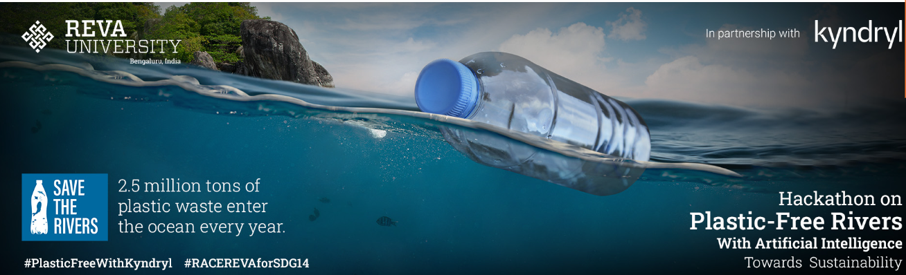

As part of a remarkable endeavor in the mission to make our rivers plastic-free, I proudly participated in a Data Competition hosted by REVA University. Using advanced YOLOv8 Computer Vision technology, our team created an innovative model to detect plastic waste in river bodies. This project reflects our commitment to environmental sustainability and the application of cutting-edge AI solutions for a cleaner, greener world.

In my final year of university, I dedicated my efforts to a significant project focused on predicting punching shear in concrete slabs. This research, which served as my undergraduate thesis, showcases the development of a Support Vector Machine (SVM) regression model for precise punching shear estimation. By delving into the complex interplay of structural behavior and machine learning, we contributed valuable insights to the field of civil engineering.

I conducted a data-driven analysis to assess water quality and potability using machine learning techniques. This project involved data exploration, preprocessing, and the development of predictive models to ensure safe and reliable water sources.

In this project, I harnessed the power of the YOLO-V8 model to revolutionize waste management. By training the model on a diverse dataset encompassing various waste items, including plastic, glass, paper, and trash, I achieved remarkable accuracy in real-time waste classification.
The advanced computer vision techniques facilitated the automated segregation of waste materials with unparalleled precision and speed.